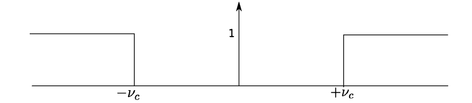
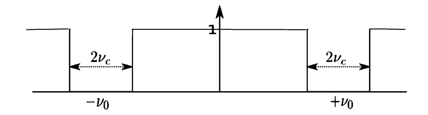

滤波器再现
我们最初使用卷积的一个应用是建立和研究几个简单的滤波器。让我们回顾一下 3.4 节中提到的术语和一些未完成的工作。未滤波的输入 v(t) 和滤波后的输出 w(t) 通过与脉冲响应 h(t) 的卷积建立关联：
\[w(t) = (h\star v)(t).\]
（我们还没有准备好解释为什么 h 被称为脉冲响应。）滤波器的动作在频域中更容易理解，因为根据卷积定理，它通过乘法起作用：
\[W(s) = H(s)V(s).\]
这里
\[W = \mathcal{F}w,\quad H =\mathcal{F}h, \quad\text{and}\quad V = \mathcal{F}v.\]
\(H(s)\)被称为传递函数（transfer function）。
最简单的例子是具有传递函数的低通滤波器，其他例子都可以由此构建：
\[\text{Low}(s) = \prod_{2v_c}(s) = \prod(\frac{s}{2v_c}) = \begin{cases} &1,\quad &|s|\lt v_c,\\ &0, &|s| \ge v_c.\end{cases} \]
该脉冲响应是
\[\text{low}(t) = 2v_c sinc(2v_ct),\]
一个缩放的sinc函数。来自输入v（t）的输出w（t）是卷积
\[w(t) = v(t)\star 2v_c sinc(2v_ct)=2v_c\int_{-\infty}^{\infty}sinc(2v_c(t-\tau))v(\tau)\ d\tau.\]
高通滤波器。回到第3章，我们展示了理想高通滤波器的传递函数图：

传递函数的公式为
\[\text{High}(s) = 1 - Low(s) = 1 - \prod_{2v_c}(s),\]
其中，\(v_c\)是截断频率。那时，我们不能简单通过取逆傅里叶变换完成分析，因为没有\(\delta\)。现在可以了。该脉冲响应是
\[\text{high}(t) = \delta(t) = 2v_csinc(2v_ct).\]
对于输入\(v(t)\)，输出是
\begin{align} w(t) &= (\text{high}\ \star v)(t)\\ &= (\delta(t) - 2v_c sinc(2v_ct))\star v(t)\\ &= v(t) - 2v_c\int_{-\infty}^{\infty} sinc(2v_c(t-\tau))v(\tau)\ d\tau. \end{align}
\(\delta\)δ的卷积性质在这个公式中的作用再次向我们表明，高通滤波器实际上减去了部分信号。
陷波滤波器。陷波滤波器的传递函数仅为 \[1 - (\text{transfer function for band-pass filter})\]
它看起来如下：

陷波内的频率被滤除，其他所有频率保持不变。假设陷波的中心位置为\(\pm v_0\)，宽度为\(2ν_c\)。对于截断频率为\(ν_c\)的低通滤波器，其传递函数公式为：
\[\text{Notch}(s) = 1 - (\text{Low}(s-v_0) + \text{Low}(s+v_0)).\]
对于脉冲响应，我们得到
\begin{align} \text{notch}(t) &= \delta(t) - (e^{-2\pi i v_0 t}\text{low}(t) + e^{2\pi v_0t}\text{low}(t))\\ &= \delta(t) - 4v_c\ \text{cos}(2\pi v_0 t)sinc(2v_c t). \end{align}
因此
\begin{align} w(t) &= (\delta(t) - 4v_c \text{cos}(2\pi v_0 t) sinc(2v_ct))\star v(t)\\ &= v(t) - 4v_c\int_{-\infty}^{\infty}\text{cos}(2\pi v_0(t-\tau))\ sinc(2v_c(t-\tau))v(\tau)\ d\tau, \end{align}
我们再次看到陷波滤波器减去了部分信号。
我们将在第8章中再次回到这些过滤器。